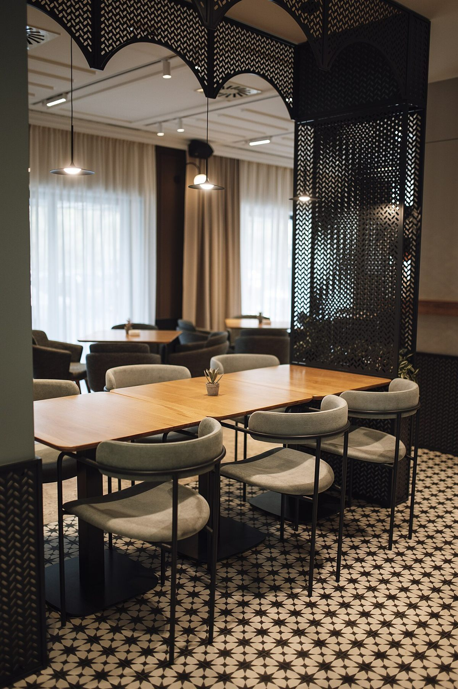
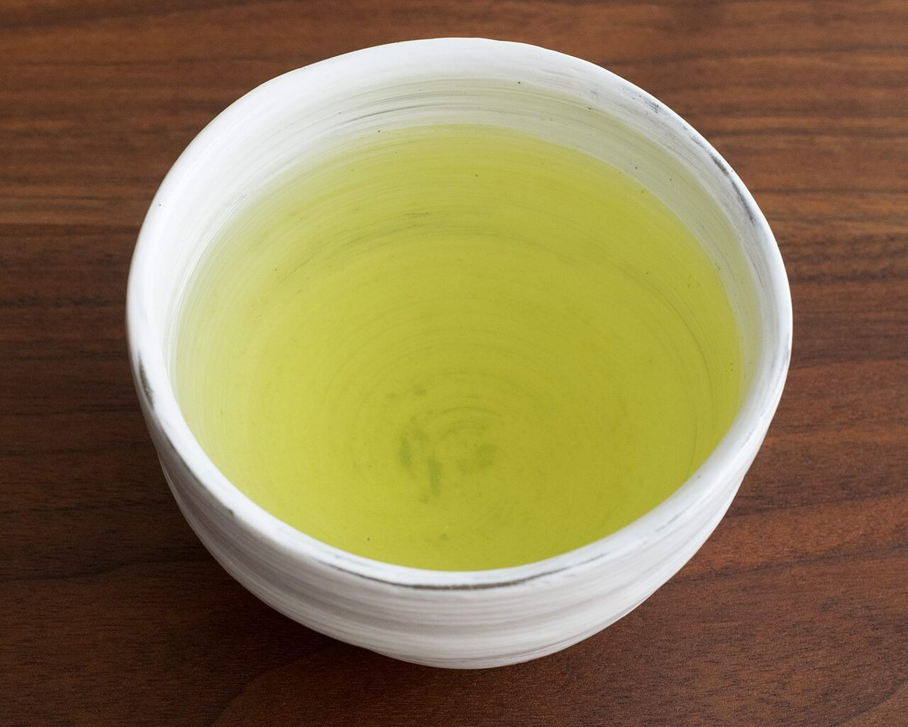

お店について

イメージ写真これはイメージ写真です。実際の店内ではありません。
確認できている情報
- 店名
- Cafe GoldenBreeze
- 所在地
- 〒889-3143 宮崎県日南市下方122
- @goldenbreeze.miyazaki
準備中の情報
- 店主・スタッフの紹介
- 準備中(お問い合わせください)
- お店のこだわり
- 準備中(お問い合わせください)
- 店名の由来
- 準備中(お問い合わせください)
- 席数・設備
- 準備中(お問い合わせください)

イメージ写真このサイトの考え方(制作側の案)
「わかっていることも、準備中も、そのまま伝票に」
お店について確認できていることは、まだ多くありません。そこで、分かっていることと準備中のことを隠さず、お会計の伝票のように1行ずつ並べるサイトにしました。見た方が、何が分かっていて、何を電話で聞けばよいかをすぐに把握できることを目指した、制作側の案です。
これは店主様の理念や店名の由来ではありません。ご意見に合わせて変更します。
ヒアリングで教えていただきたいこと
次の内容をお聞かせいただけると、このページを実際のお店の情報に置き換えられます。
- 営業時間・定休日
- メニューと料金
- お店の紹介文
- 写真(実店舗のもの)
- 問い合わせ導線の優先順位(電話・Instagram)
ご相談は お電話 または Instagram で。